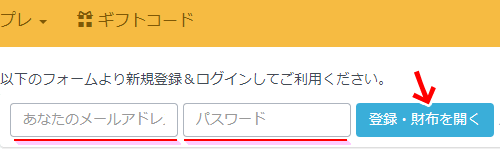
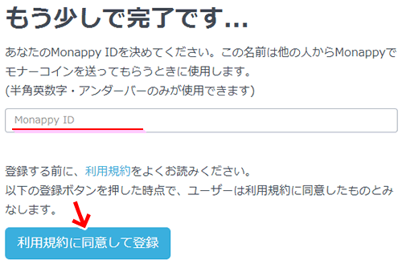
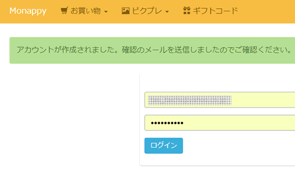
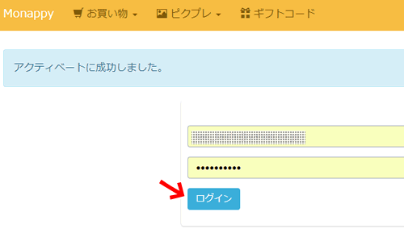
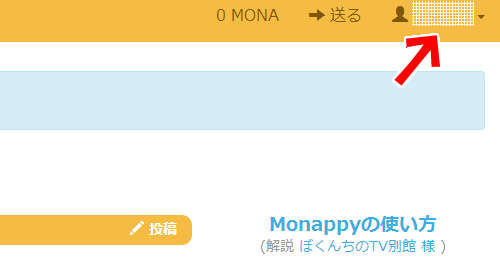
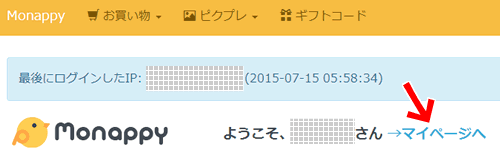
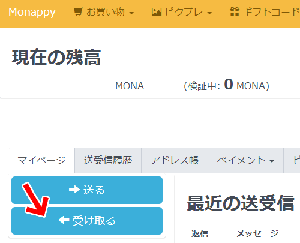
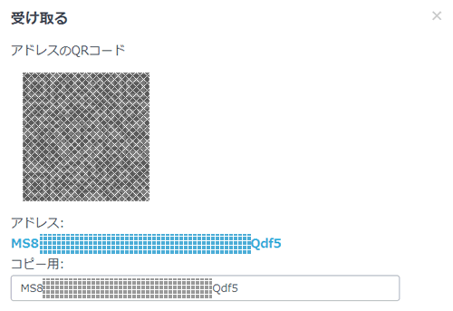

Monacoinの始め方
仮想通貨モナコインをはじめるのはそれほど難しくはないです。
まず、仮想通貨モナコインをはじめるには基本的にはふたつの作業が必要になります。
１．下記公式サイトからPCまたはスマホにモナコインWallet（ウォレット：お財布や口座みたいなもの）をダウンロードしインストールする。
・モナーコインプロジェクト「２」の取引所「Zaif」に登録すれば、モナコインだけでなくビットコインも日本円で買うことができ、逆にモナコインやビットコインを日本円として出金することが出来ます。
http://monacoin.org/ja/
２．仮想通貨モナコインやビットコインの取引所「Zaif」に登録して個人認証を済ませる。
・Zaif - 手数料ゼロのビットコイン・モナコイン取引所『ザイフ』
https://zaif.jp/
また、「Zaif」に登録することで Web上の自分のZaifアカウントにビットコインやモナコインのWallet（ウォレット：お財布や口座みたいなもの）が出来るのですが、セキュリティ面からも自分のPCやスマホにモナコインWalletをインストールし、当面使わないモナコインはそちらに保管し、こまめにバックアップを取ることをお勧めします。
と、上記のようにそれほど難しくなくモナコインをはじめることが出来るのですが、もっとお手軽気軽にはじめる方法もあります。（セキュリティ的に上記のWalletインストールを推賞）
モナコインポータル「Monappy」への登録
モナコイン界隈でも有名なモナコイン・ポータルサイト「Monappy」ですが、ここに登録するだけで簡単にWeb上にモナコインWalletを作ることが出来ます。
まずはモナコイン・ポータルサイト「Monappy」にアクセスしてみましょう。
・Monappy | Monacoinポータル＆ウォレット https://monappy.jp/

アクセスしたページ上部にあるメールアドレス入力欄、パスワード入力欄にそれぞれ入力し、「登録・財布を開く」ボタンを押します。
次の画面でMonappy ID（ニックネームのようなもの）を記入し、利用規約を読んだ上で「利用規約に同意して登録」ボタンを押します。


下の画面が表示され、登録したメールアドレスに「【Monappy】仮登録完了のお知らせ (Monappy activate)」というメールが届いているはずです。
「【Monappy】仮登録完了のお知らせ (Monappy activate)」メールに記載されているリンクをクリックして、アカウントを有効化しましょう。
これでMonappyに本登録されました。
「ログイン」ボタンを押してMonappyにログインしましょう。


ページ右上のアカ矢印部分に先ほど登録したMonappy IDが表示されていれば登録＆ログイン完了です。
おめでとうございます。
では、Monappyにある自分のモナコインWalletアドレスを確認しましょう。
Monappyトップページの中央上あたりにある「→マイページへ」をクリックします。


表示されたページ左上部にある「←受け取る」をクリックします。
開くウィンドウにアドレスのQRコードとアドレスが表示されています。
「コピー用」とある表示欄のアドレスをコピーして控えておきましょう。
このアドレスが自分のモナコインWalletアドレスになります。
このアドレスがあれば、自分も含めた他の誰かがあなたのモナコインWalletにモナコインを送金することが出来ます。
